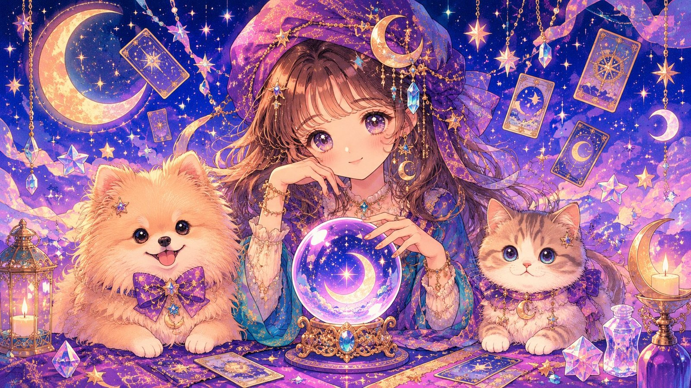

入力いただいた情報をもとに、その子だけの鑑定をお届けします。＊は必須項目です。
「ペット占い」は、愛犬・愛猫の名前や生年月日、犬種・猫種などから、西洋占星術（星座）×数秘術×動物行動学を掛け合わせて、“うちの子だけ”のパーソナルな鑑定をお届けする無料の占いコンテンツです。犬・猫の両方に対応した犬猫両用で、登録不要・完全無料でお楽しみいただけます。
このペット占いは、ペットの毎日を考えた定期通販ブランド「わんにゃんエクラ」を展開する株式会社MOFURI（モフリ／MOFURI）が運営する、犬・猫の診断メディア「わんにゃんチェッカー」のコンテンツです。占いを楽しんだあとは、うちの子との毎日に役立つわんにゃんエクラ（mofuri.net）もぜひのぞいてみてください。
はい。完全無料・登録不要でご利用いただけます。犬・猫の両方に対応した犬猫両用のペット占いです。
名前・性別・犬種/猫種・毛色・生年月日・出生時間・出生地・経歴などから、星座×数秘術×動物行動学を掛け合わせて鑑定します。
性格診断・飼い主との相性・才能・今年の運勢・月別運勢・今後5年の運勢・幸福度・幸せの瞬間ベスト5・愛犬／愛猫からの手紙など、全20項目以上の鑑定がわかります。
ペット用品ブランド「わんにゃんエクラ」を展開する株式会社MOFURI（モフリ／MOFURI）が運営する、診断メディア「わんにゃんチェッカー」のコンテンツです。
いいえ。本ペット占いはエンターテインメントの読み物です。健康面で気になる様子があるときは、かかりつけの獣医師にご相談ください。